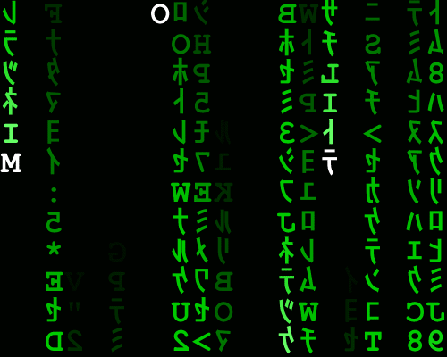

Parallel ‘Digital Rain’ by Jahobr
After two-and-a-half months, future 1.19.1 is now on CRAN. As usual, there are some bug fixes and minor improvements here and there (NEWS), including things needed by the next version of furrr. For those of you who use Slurm or LSF/OpenLava as a scheduler on your high-performance compute (HPC) cluster, future::availableCores() will now do a better job respecting the CPU resources that those schedulers allocate for your R jobs.
With all that said, the most significant update is that an informative warning is now given if random numbers were produced unexpectedly. Here “unexpectedly” means that the developer did not declare that their code needs random numbers.
If you are just interested in the updates regarding random numbers and how to make sure your code is compliant, skip down to the section on ‘Random Number Generation in the Future Framework’. If you are curious how R generates random numbers and how that matters when we use parallel processing, keep on reading.
Disclaimer: I should clarify that, although I understand some algorithms and statistical aspects behind random number generation, my knowledge is limited. If you find mistakes below, please let me know so I can correct them. If you have ideas on how to improve this blog post, or parallel random number generation, I am grateful for such suggestions.
Random Number Generation in R
Being able to generate high-quality random numbers is essential in many areas. For example, we use random number generation in cryptography to produce public-private key pairs. If there is a correlation in the random numbers produced, there is a risk that someone can reverse engineer the private key. In statistics, we need random numbers in simulation studies, bootstrap, and permutation tests. The correctness of these methods rely on the assumptions that the random numbers drawn are “as random as possible”. What we mean by “as random as possible” depends on context and there are several ways to measure “amount of randomness”, e.g. amount of autocorrelation in the sequence of numbers produced.
As developers, statisticians, and data scientists, we often have better things to do than validating the quality of random numbers. Instead, we just want to rely on the computer to produce random numbers that are “good enough.” This is often safe to do because most programming languages produce high-quality random numbers out of the box. However, when we run our algorithms in parallel, random number generation becomes more complicated and we have to make efforts to get it right.
In software, a so-called random number generator (RNG) produces all random numbers. Although hardware RNGs exist (e.g. thermal noise), by far the most common way to produce random numbers is through a pseudo RNG. A pseudo RNG uses an algorithm that produces a sequence of numbers that appear to be random but is fully deterministic given its initial state. For example, in R, we can draw one or more (pseudo) random numbers in \([0,1]\) using runif(), e.g.
> runif(n = 5)
[1] 0.9400145 0.9782264 0.1174874 0.4749971 0.5603327We can control the RNG state via set.seed(), e.g.
> set.seed(42)
> runif(n = 5)
[1] 0.9148060 0.9370754 0.2861395 0.8304476 0.6417455If we use this technique, we can regenerate the same pseudo random numbers at a later state if we reset to the same initial RNG state, i.e.
> set.seed(42)
> runif(n = 5)
[1] 0.9148060 0.9370754 0.2861395 0.8304476 0.6417455This works also after restarting R, on other computers, and other operating systems. Being able to set the initial RNG state this way allows us to produce numerically reproducible results even when the methods involved rely on randomness.
There is no need to set the RNG state, which is also referred to as “the random seed”. If not set, R uses a “random” initial RNG state based on various “random” properties such as the current timestamp and the process ID of the current R session. Because of this, we rarely have to set the random seed and things just work.
Random Number Generation for Parallel Processing
R does a superb job of taking care of us when it comes to random number generation - as long as we run our analysis sequentially in a single R process. Formally R uses the Mersenne Twister RNG algorithm [1] by default, which can we can set explicitly using RNGkind("Mersenne-Twister"). However, like many other RNG algorithms, the authors designed this one for generating random number sequentially but not in parallel. If we use it in parallel code, there is a risk that there will a correlation between the random numbers generated in parallel, and, when taken together, they may no longer be “random enough” for our needs.
A not-so-uncommon, ad hoc attempt to overcome this problem is to set a unique random seed for each parallel iteration, e.g.
library(parallel)
cl <- makeCluster(4)
y <- parLapply(cl, 1:10, function(i) {
set.seed(i)
runif(n = 5)
})
stopCluster(cl)The idea is that although i and i+1 are deterministic, set.seed(i) and set.seed(i+1) will set two different RNG states that are “non-deterministic” compared to each other, e.g. if we know one of them, we cannot predict the other. We can also find other variants of this approach. For instance, we can pre-generate a set of “random” random seeds and use them one-by-one in each iteration;
library(parallel)
cl <- makeCluster(4)
set.seed(42)
seeds <- sample.int(n = 10)
y <- parLapply(cl, seeds, function(seed) {
set.seed(seed)
runif(n = 5)
})
stopCluster(cl)However, these approaches do not guarantee high-quality random numbers. Although not parallel-safe by itself, the latter approach resembles the gist of RNG algorithms designed for parallel processing.
The L’Ecuyer Combined Multiple Recursive random number Generators (CMRG) method [2,3] provides an RNG algorithm that works also for parallel processing. R has built-in support for this method via the parallel package. See help("nextRNGStream", package = "parallel") for additional information. One way to use this is:
library(parallel)
cl <- makeCluster(4)
RNGkind("L'Ecuyer-CMRG")
set.seed(42)
seeds <- list(.Random.seed)
for (i in 2:10) seeds[[i]] <- nextRNGStream(seeds[[i - 1]])
y <- parLapply(cl, seeds, function(seed) {
.Random.seed <- seed
runif(n = 5)
})
stopCluster(cl)Note the similarity to the previous attempt above. For convenience, R provides parallel::clusterSetRNGStream(), which allows us to do:
library(parallel)
cl <- makeCluster(4)
clusterSetRNGStream(cl, iseed = 42)
y <- parLapply(cl, 1:10, function(i) {
runif(n = 5)
})
stopCluster(cl)Comment: Contrary to the manual approach, clusterSetRNGStream() does not create one RNG seed per iteration (here ten) but one per workers (here four). Because of this, the two examples will not produce the same random numbers despite using the same initial seed (42). When using clusterSetRNGStream(), the sequence of random numbers produced will depend on the number of parallel workers used, meaning the results will not be numerically identical unless we use the same number of parallel workers. Having said this, we are using a parallel-safe RNG algorithm here, so we still get high-quality random numbers without risking to compromising our statistical analysis, if that is what we are running.
Random Number Generation in the Future Framework
The future framework, which provides a unifying approach to parallel processing in R, uses the L’Ecuyer CMRG algorithm to generate all random numbers. There is no need to specify RNGkind("L'Ecuyer-CMRG") - if not already set, the future framework will still use it internally. At the lowest level, the Future API supports specifying the random seed for each individual future. However, most developers and end-users use the higher-level map-reduce APIs provided by the future.apply and furrr package, which provides “seed” arguments for controlling the RNG behavior. Importantly, generating L’Ecuyer-CMRG RNG streams comes with a significant overhead. Because of this, the default is to not generate them. If we intend to produce random numbers, we need to specify that via the “seed” argument, e.g.
library(future.apply)
y <- future_lapply(1:10, function(i) {
runif(n = 5)
}, future.seed = TRUE)and
library(furrr)
y <- future_map(1:10, function(i) {
runif(n = 5)
}, .options = future_options(seed = TRUE))Contrary to generating RNG streams, checking if a future has used random numbers is quick. All we have to do is to keep track of the RNG state and check if it still the same afterward (after the future has been resolved). Starting with future 1.19.0, the future framework will warn us whenever we use the RNG without declaring it. For instance,
> y <- future_lapply(1:10, function(i) {
+ runif(n = 5)
+ })
Warning message:
UNRELIABLE VALUE: Future ('future_lapply-1') unexpectedly generated random
numbers without specifying argument '[future.]seed'. There is a risk that
those random numbers are not statistically sound and the overall results
might be invalid. To fix this, specify argument '[future.]seed', e.g.
'seed=TRUE'. This ensures that proper, parallel-safe random numbers are
produced via the L'Ecuyer-CMRG method. To disable this check, use
[future].seed=NULL, or set option 'future.rng.onMisuse' to "ignore". Although technically unnecessary, this warning will also be produced when running sequentially. This is to make sure that all future-based code will produce correct results when switching to a parallel backend.
When using foreach the best practice is to use the doRNG package to produce parallel-safe random numbers. This is true regardless of foreach adaptor and parallel backend used. Specifically, instead of using %dopar% we want to use %dorng%. For example, here is what it looks like if we use the doFuture adaptor;
library(foreach)
library(doRNG)
doFuture::registerDoFuture()
future::plan("multisession")
y <- foreach(i = 1:10) %dorng% {
runif(n = 5)
}The benefit of using the doFuture adaptor is that it will also detect when we, or packages that use foreach, forget to declare that the RNG is needed, e.g.
y <- foreach(i = 1:10) %dopar% {
runif(n = 5)
}
Warning messages:
1: UNRELIABLE VALUE: Future ('doFuture-1') unexpectedly generated random
numbers without specifying argument '[future.]seed'. There is a risk that
those random numbers are not statistically sound and the overall results
might be invalid. To fix this, specify argument '[future.]seed', e.g.
'seed=TRUE'. This ensures that proper, parallel-safe random numbers are
produced via the L'Ecuyer-CMRG method. To disable this check, use
[future].seed=NULL, or set option 'future.rng.onMisuse' to "ignore".
...Note that there will be one warning per future, which in the above examples, means one warning per parallel worker.
If you are an end-user of a package that uses futures internally and you get these warnings, please report them to the maintainer of that package. You might have to use options(warn = 2) to upgrade to an error and then traceback() to track down from where the warning originates. It is not unlikely that they have forgotten or are not aware of the problem of using a proper RNG for parallel processing. Regardless, the fix is for them to declare future.seed = TRUE. If these warnings are irrelevant and the maintainer does not believe there is an RNG issue, then they can declare that using future.seed = NULL, e.g.
y <- future_lapply(X, function(x) {
...
}, future.seed = NULL)The default is future.seed = FALSE, which means “no random numbers will be produced, and if there are, then it is a mistake.”
Until the maintainer has corrected this, as an end-user you can silence these warnings by setting:
options(future.rng.onMisuse = "ignore")which was the default until future 1.19.0. If you want to be conservative, you can even upgrade the warning to a run-time error by setting this option to "error".
If you are a developer and struggle to narrow down exactly which part of your code uses random number generation, see my blog post ‘Detect When the Random Number Generator Was Used’ for an example how you can track the RNG state at the R prompt and get a notification whenever a function call used the RNG internally.
What’s next regarding RNG and futures?
The higher-level map-reduce APIs in the future framework support perfectly reproducible random numbers regardless of future backend and number of parallel workers being used. This is convenient because it allows us to get identical results when we, for instance, move from a notebook to an HPC environment. The downside is that this RNG strategy requires that one RNG stream is created per iteration, which is expensive when there are many elements to iterate over. If one does not need numerically reproducible random numbers, then it would be sufficient and valid to produce one RNG stream per chunk, where we often have one chunk per worker, similar to what
parallel::clusterSetRNGStream()does. It has been on the roadmap for a while to add support for per-chunk RNG streams as well. The remaining thing we need to resolve is to decide on exactly how to specify that type of strategy, e.g.future_lapply(..., future.seed = "per-chunk")versusfuture_lapply(..., future.seed = "per-element"), where the latter is an alternative to today’sfuture.seed = TRUE. I will probably address this in a new utility package future.mapreduce that can serve future.apply and furrr and likes, so that they do not have to re-implement this locally, which is error prone and how it works at the moment.L’Ecuyer CMRG is not the only RNG algorithm designed for parallel processing but some developers might want to use another method. There are already many CRAN packages that provide alternatives, e.g. dqrng, qrandom, random, randtoolbox, rlecuyer, rngtools, rngwell19937, rstream, rTRNG, and sitmo. It is on the long-term road map to support other types of parallel RNG methods. It will require a fair bit of work to come up with a unifying API for this and then a substantial amount of testing and validation to make sure it is correct.
Happy random futuring!
References
Matsumoto, M. and Nishimura, T. (1998). Mersenne Twister: A 623-dimensionally equidistributed uniform pseudo-random number generator, ACM Transactions on Modeling and Computer Simulation, 8, 3–30.
L’Ecuyer, P. (1999). Good parameters and implementations for combined multiple recursive random number generators. Operations Research, 47, 159–164. doi: 10.1287/opre.47.1.159.
L’Ecuyer, P., Simard, R., Chen, E. J. and Kelton, W. D. (2002). An object-oriented random-number package with many long streams and substreams. Operations Research, 50, 1073–1075. doi: 10.1287/opre.50.6.1073.358.